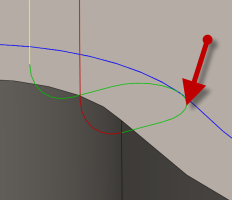

<table valign=middle><tr><td height=24 width=24></td><td><div id="entry_radius"><h3 id="entry_radius">Радиус горизонтального подвода</h3>
</td></tr></table>
<p>Указание радиуса для горизонтального подвода.</p>
<br><center>
<center><table valign=top class="tipTable">
<tr>
<td><center></center></td>
</tr><tr>
<td><center><p><b>Радиус горизонтального подвода</b></p></center></td>
</tr></table><left>
</div>